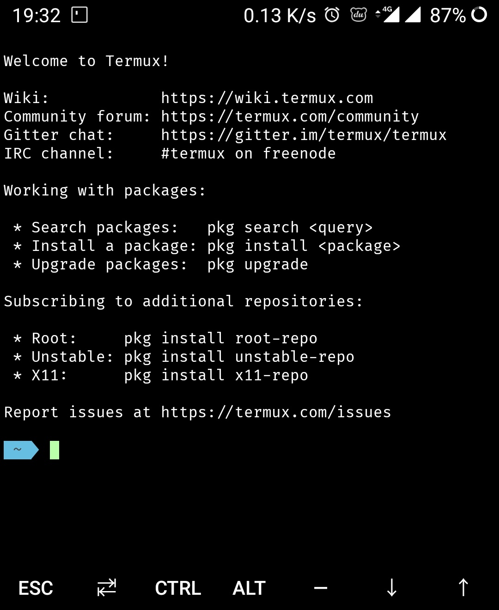

Termux是一个Android下一个高级的终端模拟器,开源且不需要root，支持apt管理软件包，十分方便安装软件包，完美支持Golang、Python、PHP、Ruby、Nodejs、MySQL等。随着智能设备的普及和性能的不断提升，如今的手机、平板等的硬件标准已达到了初级桌面计算机的硬件标准，用心去打造DIY的话完全可以把手机变成一个强大的极客工具。
Termux下载安装
下载地址
GooglePlay下载的版本比酷安要新，而且插件这块安装也很方便，有能力的朋友建议首先考虑下载GooglePLay版本的，然后考虑F-Droid版本，最后再考虑可怜兮兮的酷安版本。
安装完成后的Termux界面如下：
修改源
先用系统自带的编辑工具VI打开源文件
vi $PREFIX/etc/apt/sources.list 按英文字母i可以进入编辑模式，添加如下内容
# The termux repository mirror from TUNA:
deb https://mirrors.tuna.tsinghua.edu.cn/termux/termux-packages-24 stable main修改完成确认无误后按ESC退出VI的编辑模式后输入:wq保存并退出文件。
这个
#后面的是注释，你也可以在原内容前面加#注释掉原内容，然后在输入新内容
修改第二个文件：
vi $PREFIX/etc/apt/sources.list.d/science.list替换或者注释原内容后追加以下内容
# The termux repository mirror from TUNA:
deb https://mirrors.tuna.tsinghua.edu.cn/termux/science-packages-24 science stable修改第三个文件
vi $PREFIX/etc/apt/sources.list.d/game.list修改为一下内容
# The termux repository mirror from TUNA:
deb https://mirrors.tuna.tsinghua.edu.cn/termux/game-packages-24 games stable或者你也可以用
cd ~/../usr/etc/apt/进入对应文件夹，找到对应文件后用以下命令备份原文件在修改。就算该错了也能复原。文件改名命令：
mv 原文件名 新文件名更新源
修改好以后在终端命令行输入以下命令更新源
pkg update出现以下内容代表修改更新完成。
Reading package lists... Done
Building dependency tree
Reading state information... Done
All packages are up to date.如果你跟我一样英文垃圾，那就上翻译器翻译一下就好。我用的谷歌翻译。记住，只要看不懂，就翻译。
升级原件包
用以下命令更新软件包
pkg upgrade出现一下内容，基本确定更新完成
0 upgraded, 0 newly installed, 0 to remove and 0 not upgraded.我这里是0的地方你那边可能是其它数字，不影响。上面一行的大概意思是更新了几个，成功了几个之类的。
安装vim
接下来安装vim，vim是一款linux系统下的编辑工具，和VI类似，功能据说比VI强大。以后只要涉及到文档编辑的我都是用VIM来完成，包括写GO源代码。
pkg install vim安装完成后，在命令行输入vim回车，只要界面一变，跟终端命令行不一样了，界面类似输入vi后的界面，那就说明安装成功了。
安装配色方案ohmyzsh
现在的命令行界面除了黑色就是白色，看着太丑了。接下来就是美化终端命令行，这里用的是OhMyzsh。安装命令如下
sh -c "$(curl -fsSL https://github.com/Cabbagec/termux-ohmyzsh/raw/master/install.sh)" 如果因为不可抗力的原因，出现port 443: Connection refused网络超时的情况，那么执行下面的命令即可：
sh -c "$(curl -fsSL https://html.sqlsec.com/termux-install.sh)" 安装过程中会有两次让你输入数字的机会，第一次输14第二次输入6，记得输入完后按回车昂。这两次输入的数字分别选择色彩样式和字体样式，重启Termux app后生效配置。不满意刚刚的效果，想要继续更改配色方案的话，可以根据下面命令来更改对应的色彩配色方案：
设置色彩样式：
~/.termux/colors.sh设置字体
~/.termux/fonts.shAndroid6.0 以上会弹框确认是否授权访问文件,点击始终允许授权后 Termux 可以方便的访问SD卡文件。
手机App默认只能访问自己的数据，如果要访问手机的存储，需要请求权限，如果你刚刚不小心点了拒绝的话，那么可以执行以下命令来重新获取访问权限:
termux-setup-storage创建QQ文件夹软目录
有的时候小伙伴可能会用QQ传一下文件过来，咱们CD过来CD过去很麻烦。那就建立一个快捷方式，又叫软链接目录。CD一次直达QQ文件夹
ln -s /data/data/com.termux/files/home/storage/shared/tencent/QQfile_recv QQ安装golang编译工具
接下来就是安装Golang编译工具了。用一下命令安装
pkg install golang出现一下内容说明安装成功
Setting up golang (2:1.14.3) ...或者输入命令：
go version出现以下内容说明安装成功
go version go1.14.3 android/arm64创建GO工作目录
Go工作目录就是我们写golang源代码的目录。以后我们写的所有源代码都是在这个工作目录里面完成。这个工作目录是必须要有的，这一步不能偷懒。因为后面我们写代码要导入一些第三方包或者Go编译器的一下工具都依赖这个工作目录。
mkdir ~/go/src
mkdir ~/go/bin
mkdir ~/go/pkg上面三个命令执行完毕，会在~目录下创建一个文件夹go，go文件夹下面有三个文件夹src，bin，pkg。其中src主要存放源代码，包括自己写的和第三方包源代码。bin存放的是编译后的可执行文件，主要是golang编译器的一下小工具。pkg存放的是编译后生成的文件（说句实话，我也不太清楚这个编译后生成的文件是什么意思。但是，这个文件必须得有。）
修改golqng的环境变量
首先，在终端命令行输入go env后在回显中仔细的找到GOROOT的内容记下来，等下要用到。大概率你的会和我的一样是：
GOROOT=/data/data/com.termux/files/usr/lib/go 然后用vim修改文件~/../usr/etc/profile，文件内的其它东西不要动，在末尾添加以下内容(GOROOT后面的内容就是刚才让你记下来的东西)
# golang环境设置
export GOROOT=/data/data/com.termux/files/usr/lib/go
export GOPATH=$HOME/go
export GOBIN=$HOME/go/bin其中:
- GOPATH是上一步新建的文件夹go
- GOBIN是新建文件夹go/bin
- GOROOT是运行命令
go env后显示的GOROOT内容
修改完成后重新启动Termux，在终端运行echo $GOROOT，echo $GOPATG, echo $GOBIN验证是否修改成功。
然后进入go/src/目录下，新建文件test.go，写入一下代码：
package main
import "fmt"
func main() {
fmt.Println("Hello Golang")
}- 运行命令
go run test.go显示Hello Golang。 - 运行命令
go build test.go后在该文件夹下有test可执行文件，在运行./test后显示Hello Golang。 - 运行
go install test.go后，在bin文件夹下有test可执行文件，运行./test后显示Hello Golang。
说明golang环境配置完成。如果不放心，可以把test.go文件拷贝到src文件夹下再次运行go run,go build,go install三组命令。
安装SpaceVim
SpaceVim是在原版vim基础上添加一下插件，美化界面。对我们写golqng代码更有好。功能有代码提示，代码补全，自动导入包文件等。安装命令如下：
curl -sLf https://spacevim.org/cn/install.sh | bash安装过程很是折磨人，我安装了一个下午，每次都是到30%的时候就安装失败。建议挂代理安装。上代理后先运行一下ping baidu.com和ping google.com看一下代理能不能用。我试了3个代理，只有一个能用。谷歌商店安装神马VPN，也就是之前的无码，非常好用。也试过老王VPN，但是开了老王，手机上网没问题，终端ping百度或谷歌都没反应。安装成功后输入命令vim如果是下面这种界面说明安装成功。
既然挂上VPN了，那就多下载几个golang辅助库吧，找个能用的代理不容易。
go get -u golang.org/x/tools/
go get -u golang.org/x/net/
go get -u golang.org/x/text/都下载完成后输入vim打开界面后先安装更新一下插件吧。英文键盘输入:SPUpdate然后回车，一定要记得输入冒号:昂。等更新完成后，输入:q!回车退出vim，关闭shell重进一次确保安装成功有效。更新界面如下图
进入go/src/文件夹下面输入vim test.go回车编辑之前咱们的测试代码，在mina()内输入fmt.Println()，嘿嘿，是不是刚输入一个f就卡死了，哈哈哈。如下图：
强制退出重新进入termux，进入go/src/golang.org/x/tools/下面，找到文件夹gopls文件夹，进入后运行命令
go install main.go有gopls.go就
go install gopls.go然后进入go/bin/文件夹下面，把刚才生成的可执行文件改名为gopls，当然你要是愿意也能用go build。一定要确保go/bin文件夹下面要有你刚才生成的可执行文件，并且名字一定得是gopls。
在用vim打开咱的test.go，如果出现文件错误那就输入d回车或者:wq!回车，然后重新用vim打开测试文件test.go,继续编辑测试代码，输入:w是可能会出现如下情况：
输入:q!退出vim后，再次进入go/src/golang.org/x/tools/文件夹下面,进入cmd文件夹下面，看到这货了吧。运行
go install ./goimports然后进入go/bin目录下确保有刚才生成的可执行文件goimports，再次用vim打开测试代码test.go。如果一切顺利的话，那就可以愉快的用手机写Go语言的BUG了。如果还有其它错误，注意仔细看提示，缺啥安装啥就行。一定几点要把可执行文件放在go/bin目录下。如下图：
vim和spacevim共存方案
用vim习惯了，突然用SpaceVim可能会不太习惯，问题不大。首先卸载spacevim，用如下命令：
curl -sLf https://spacevim.org/install.sh | bash -s -- --uninstall然后，在.bashrc或者.zshrc中，增加
alias svim='vim -u ~/.SpaceVim/vimrc'使用vim直接启动原版vim，使用svim启动spacevim。
如果找不到.bashrc文件，用
ls -a命令可查看隐藏文件。